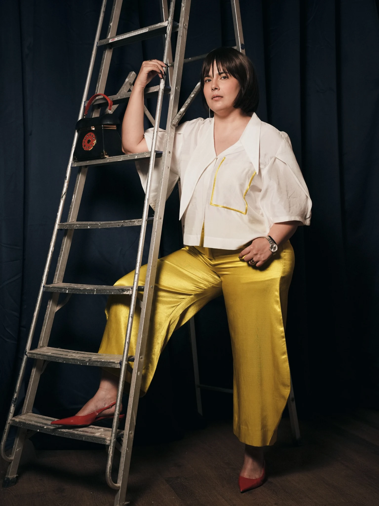

01 / 03
01 / 03
01 / THE SERVICE
Color Analysis
Explore colours that feel true to you, and how they shape what you wear.
ENQUIRE ABOUT THIS SERVICE


We create pieces for your moments, your style and your way of dressing.
Choose a garment type or SHANERYN look and add the measurements you know.
Measurements are used only within this page to prepare your personal request. No fitting is confirmed or booked online.Start with a garment type for new bespoke ideas, or choose an existing SHANERYN look for personalisation.
Measurements remain here until you leave the page.
Use a soft measuring tape and stand naturally. Keep the tape level and comfortable, without pulling it tight.
Record the measurement at the point indicated by the field label. The SHANERYN team will confirm the appropriate fitting requirements with you.
Ready to discuss your preferences? Continue with this summary in a personal email draft. You can edit the details before sending.
Three ways to explore your individual style.
01 / 03
Explore colours that feel true to you, and how they shape what you wear.
ENQUIRE ABOUT THIS SERVICE 02 / 03
02 / 03
Discover silhouettes, comfort and an expression that feels like your own.
ENQUIRE ABOUT THIS SERVICE
03 / 03Thoughtful one-to-one styling for celebrations, weddings and special moments.
ENQUIRE ABOUT THIS SERVICESelected photographs from earlier creative work.
Original archival photographs; visual quality varies across the collection.
Prepare a personal enquiry about your look. Copy your request or open an email draft; this site does not submit it automatically.
Enquiries are prepared as email drafts to info@shenerian.com. The website does not send or save requests until CMS integration.
A shortlist saved locally in your browser; no sign-in required.
Explore Collections ↗
Look reference
An editorial presentation of the look.
1 / 12
The SHANERYN film will appear here once the approved video is available.